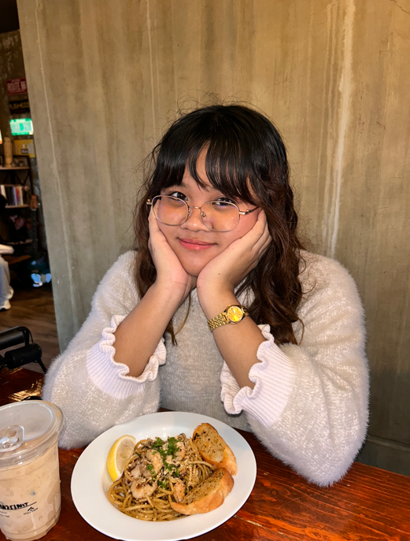
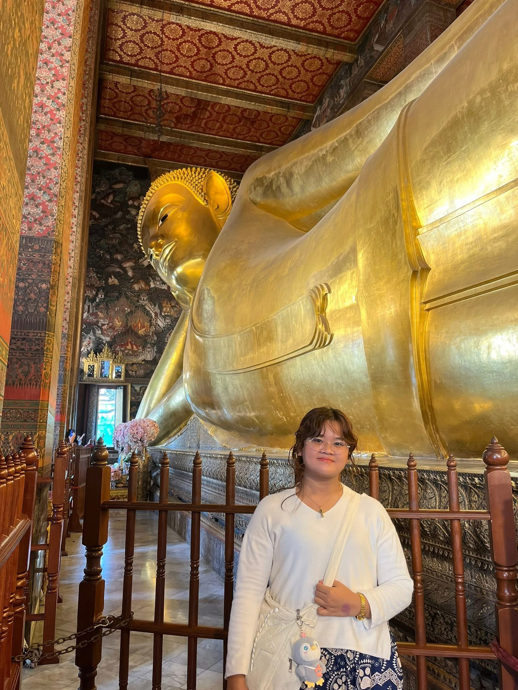
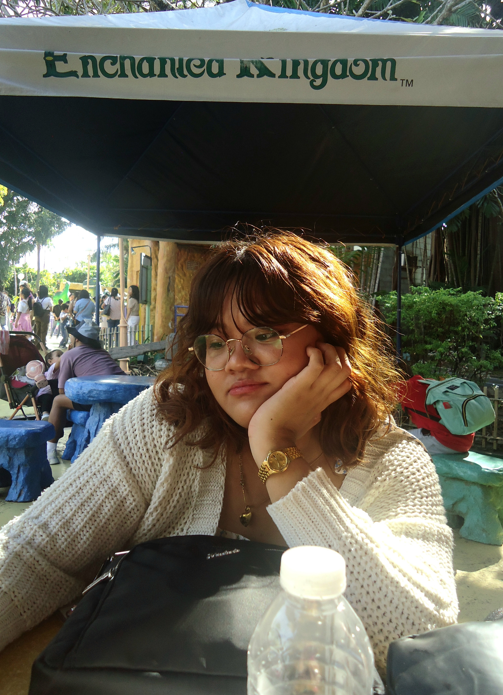
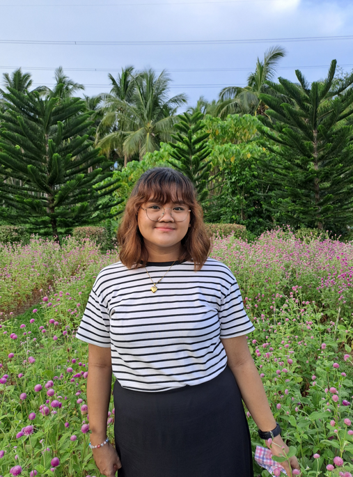
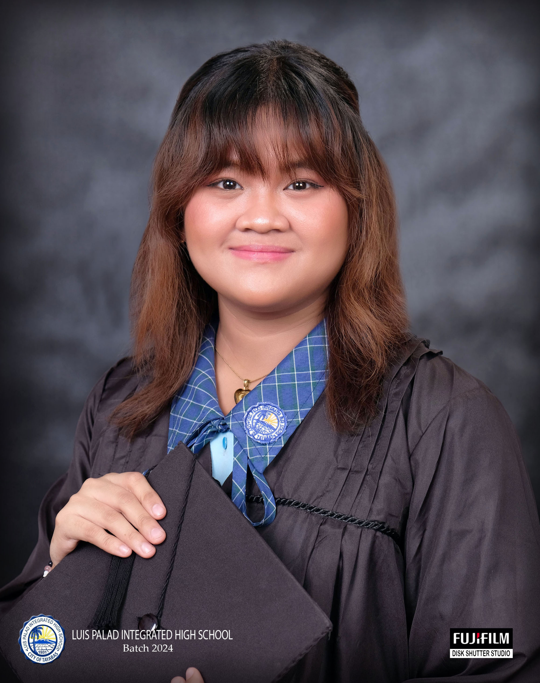
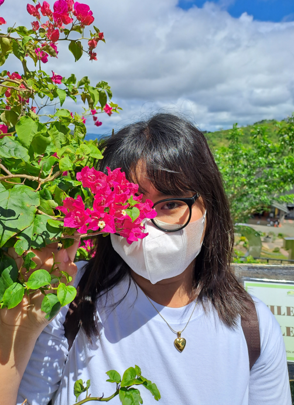
Welcome to my blog, and thank you for stopping by.
I currently live in Tayabas City, Quezon Province. I study at Southern Luzon State University, where I
am a second-year BS Computer Engineering student and a beginner programmer.
I started Miles Away as a personal blog project for one of my courses. What began as a requirement
eventually became something I wanted to keep. As I continue to explore more
destinations and experiences, I hope to grow this blog with me.
Miles Away is my little corner of the internet. It is part travel diary, part reflection, and part love
letter to the places that have left a mark on me. I write about local trips around the Philippines,
occasional international experiences, food that is worth the detour, and the quiet, unplanned moments
that often become the most meaningful parts of any journey.
So far, I have only traveled internationally to Thailand twice, once in September 2019 and again in
August 2025. I may not have seen much of the world yet, but it remains one of my biggest goals in life
to explore it, one place at a time. For now, I write from where I am in Quezon Province, Philippines,
where many of my stories begin, often alongside my family and friends.
Traveling became possible for me mainly because of them. My family has always loved going out, whether
it is visiting new places or simply trying different restaurants. Those small trips, especially with my
eldest brother leading the way, slowly shaped my love for exploring.
We may not live a luxurious life, but we are fortunate enough to experience travel in our own way. For
us, it is a form of rest, joy, and connection. It is not about extravagance, but about shared moments,
laughter, and the simple act of being somewhere new together.
I have always looked up to my brothers, who are able to travel more often through their hard work and
dedication. They have shown me that exploring the world is something you build towards and learn to
appreciate deeply.
A special thank you to my eldest brother, Giovanni, and my second brother,
Dominic, for making many of these experiences possible. This blog exists in part
because of the opportunities they have given me to see more beyond what I once thought I could.
I am not a professional traveler. I am simply someone who saves up, plans when I can, and goes when the
opportunity comes. I also keep a growing list of places I hope to visit someday, and slowly, I am
working my way through it.
If anything here resonates with you, I hope it inspires you to take your own trip, no matter how near or
far.
Travel isn't always pretty. It isn't always comfortable. But that's okay. The journey changes you — and that's the point.— something I remind myself before every trip
I travel because staying at home often leaves me feeling restless. I find myself scrolling through
social media, seeing beautiful places and experiences shared by others, and craving the chance to see
those sceneries with my own eyes and taste the food for myself. There is something different about being
physically present in a place that no photo or video can fully capture. Each trip gives me a new
perspective,
whether it is through the people I meet, the culture I observe, or the small moments that stay with
me long after I return home.
And I write about it because memory fades, but words last longer. I would describe myself as someone who
can be forgetful, and I would hate to lose the memories of my travels and experiences as time passes.
Through this blog, I want to preserve every moment as much as I can, to hold onto the feelings, lessons,
and details that made each journey special.
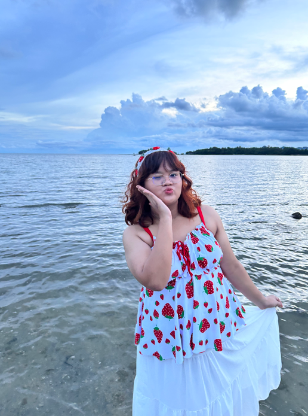
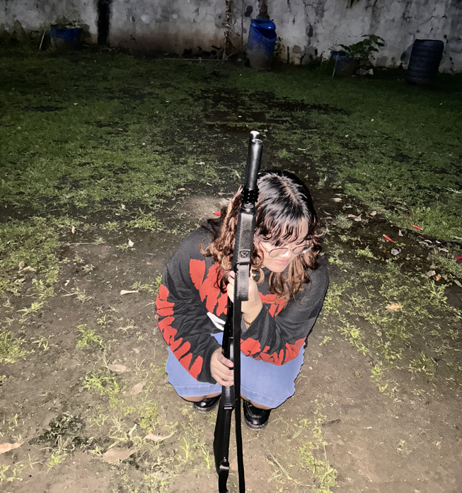
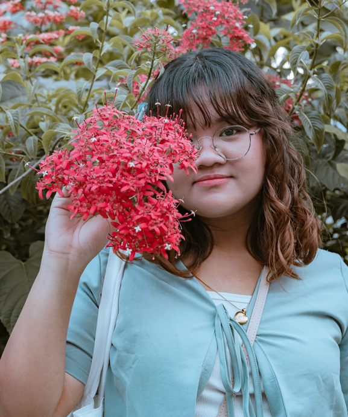
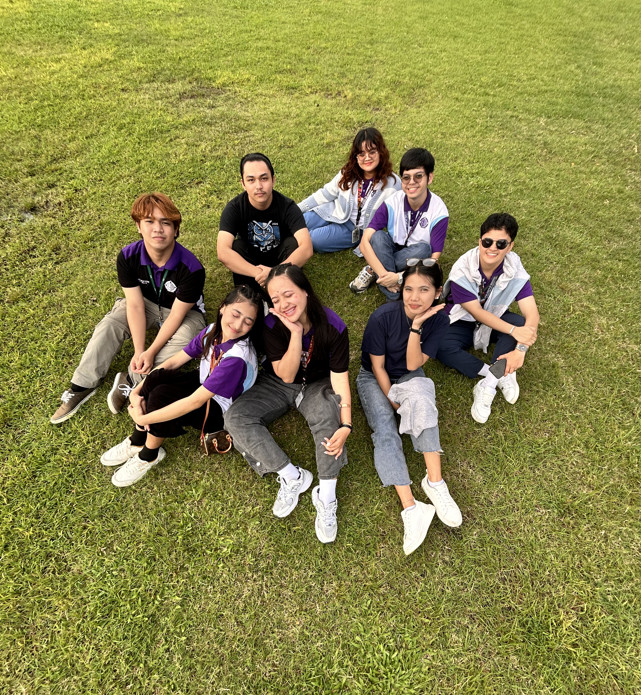
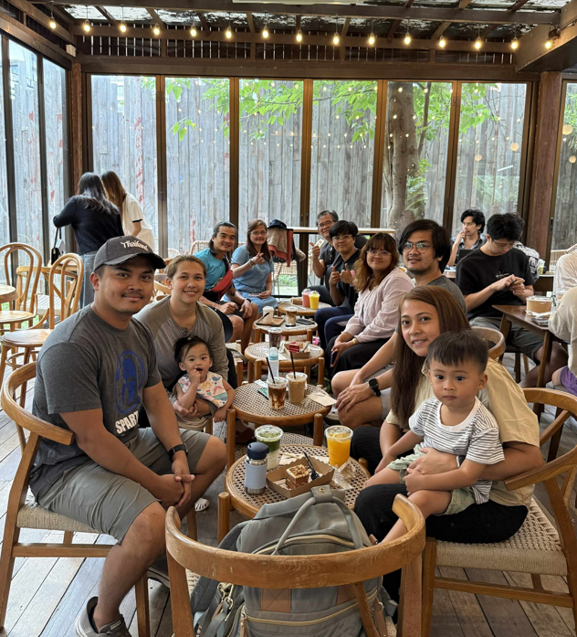
Which means I'm not the one in charge… but I'm definitely the one taking all the pictures.
Because if I trust my memory, I will forget something important and remember it exactly 5 minutes after leaving.
Not for fun, but to avoid suffering. I need to know if I'm dressing for sunshine, rain, or surprise chaos.
Food, walls, random streets… and yes, myself too. I'm camera shy but also camera dependent. It's complicated.
If it looks questionable, I'm probably trying it. For the experience. And forda story. Kahit natalon pa 'yan
Even when I don't need to. Even when my bag is full. It's for my friends… and also my lack of self-control (anak ng mayaman yarn?).
Whether you want to say hi, share a travel tip, or just talk about good cafés — my inbox is always open.